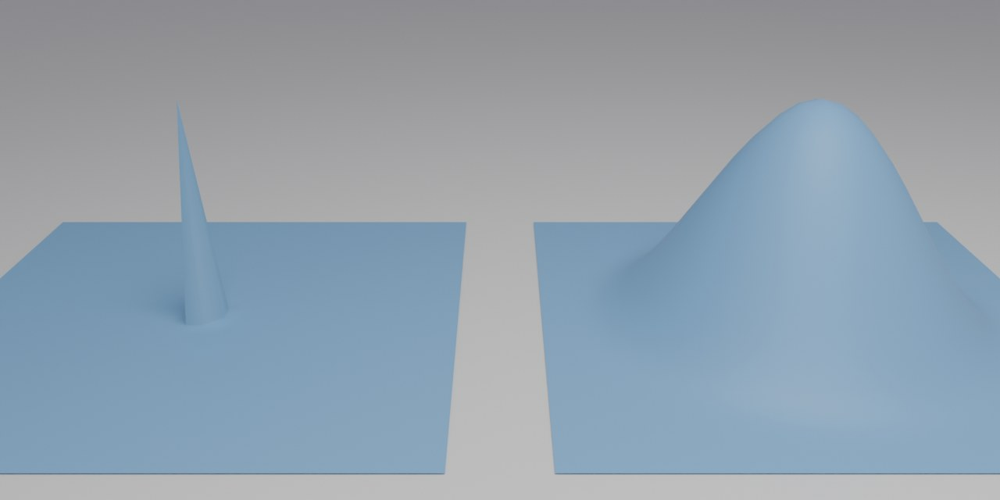

Bonus lesson
Proportional Editing
When you move one vertex of a dense mesh, you usually get a sharp spike. Proportional Editing fixes that: the manual says it transforms the selected elements while also affecting the nearby unselected ones. The farther away an element is, the less it is affected. It is useful for smoothly deforming dense meshes.
1. Turn it on
Press O in the 3D Viewport, or use the Proportional Editing button in the header. Press O again to turn it off. When it is off, only the selected vertices move. When it is on, vertices inside a set radius move too.

2. Change the size
While you move something, change the radius of influence with the mouse wheel, or with PageUp and PageDown. You can also set it in the Proportional Editing popover. As the radius changes, the points around your selection adjust.
3. Pick a falloff
The falloff is the curve that decides how quickly the effect fades. Click the Falloff icon in the header, or press Shift+O for a pie menu. The manual lists Smooth, Sphere, Root, Inverse Square, Sharp, Linear, Constant and Random. Constant means no falloff at all. Try Smooth first for soft shapes and Sharp for pointier ones.
4. Edit Mode and Object Mode
It is mostly used in Edit Mode, on vertices. The manual notes it also works in Object Mode, where it affects whole objects near the one you scale or move.
Read the manual page on Proportional Editing.
Exercise
Add a Plane, go to Edit Mode and subdivide it a few times. Select one vertex and press G then Z, and move it up. Undo, press O, and try again. Roll the mouse wheel to change the size, then try Shift+O and compare falloffs.